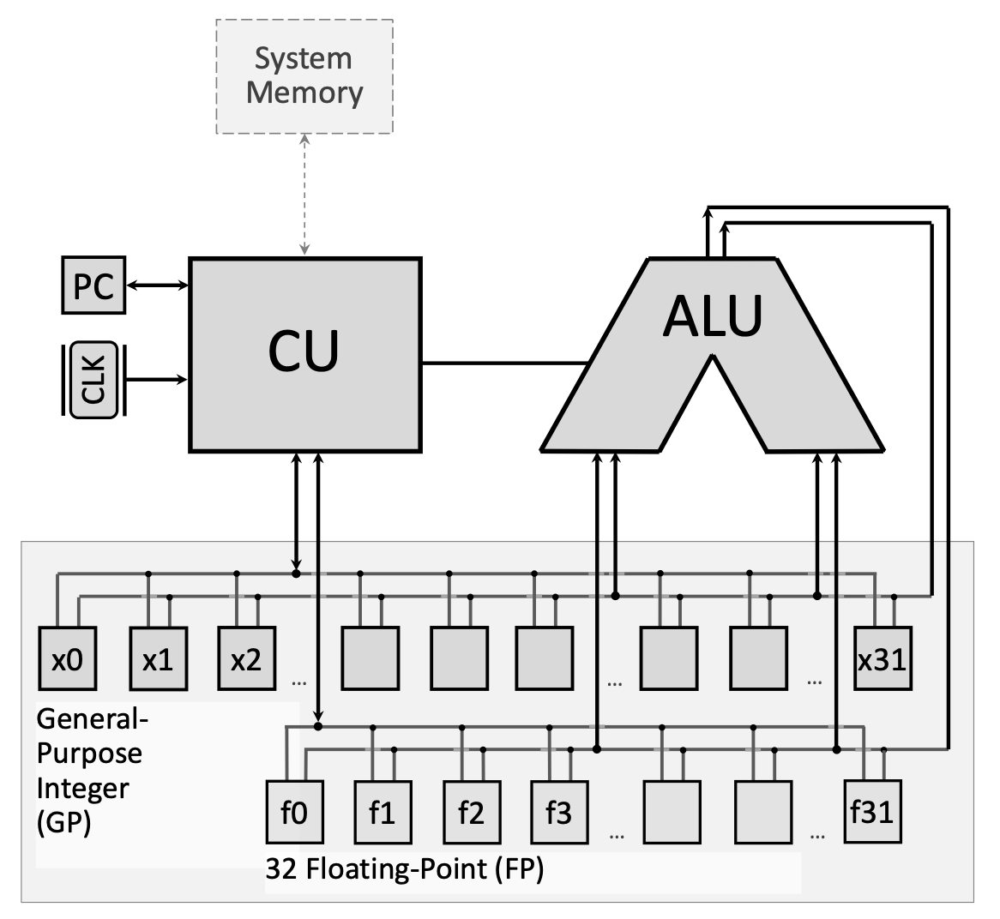
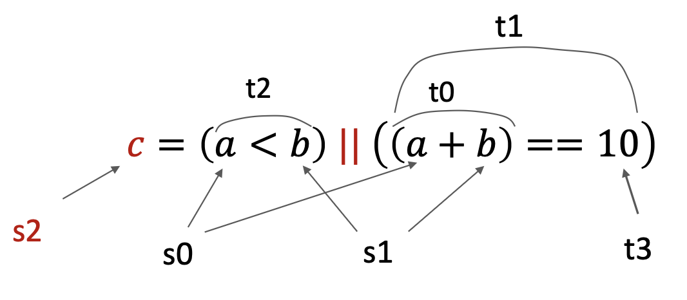

W12. Инструкции ветвления RISC-V, инструкции перехода, логические инструкции, инструкции сдвига
1. Краткое содержание
1.1 Структура программы RISC-V
Программы сборки RISC-V разделены на два основных сегмента, которые служат разным целям при выполнении программы. Понимание этой структуры имеет основополагающее значение для написания любой программы RISC-V.

1.1.1 Сегмент .data
Сегмент .data — это место, где вы объявляете и выделяете память для переменных перед запуском вашей программы. Думайте об этом как о разделе «настройки», где вы резервируете место для всех данных, которыми ваша программа должна будет манипулировать. Этот сегмент предшествует фактическим инструкциям программы и сообщает ассемблеру, сколько памяти следует выделить.
Вы можете объявить различные типы данных:
.byte: выделяет 1 байт (8 бит) для одного символа..half: выделяет 2 байта (16 бит) для целого числа, состоящего из половины слова..word: выделяет 4 байта (32 бита) для полного целого числа..float: выделяет 4 байта для числа одинарной точности с плавающей запятой..double: выделяет 8 байтов для числа двойной точности с плавающей запятой..space n: выделяетnпоследовательных байтов (полезно для массивов).asciiz "text"или.asciz "text": выделяет строку с нулевым завершением (знак “z” означает нулевой конец)
Каждое объявление переменной состоит из метки (имя переменной, за которым следует двоеточие) и директивы (тип данных). Например:
.data
myVar: .word # Allocates 4 bytes, labeled as myVar
myArray: .space 20 # Allocates 20 bytes for an array
message: .asciiz "Hello, World!" # String with null terminator1.1.2 Сегмент .text
Сегмент .text содержит фактические инструкции программы, которые будет выполнять ЦП. Здесь живет ваша алгоритмическая логика. Сегмент обычно начинается с метки (обычно main:), которая отмечает точку входа в вашу программу.
При желании вы можете использовать директиву .globl перед меткой, чтобы сделать этот блок кода видимым для других программ или модулей. Это полезно при написании многофайловых программ.
.text
.globl main # Optional: makes main visible externally
main: # Entry point label
# Your program instructions go here1.2 Инструкции для ветвей
Инструкции ветвления являются основой потока управления на языке ассемблера. Они позволяют вашей программе принимать решения и повторять операции — строительные блоки циклов и условных операторов.
1.2.1 Условные переходы
Условные ветки проверяют условие и выполняют переход только в том случае, если это условие истинно. RISC-V предоставляет шесть основных инструкций условного перехода:
beq rs1, rs2, label: Переход при равенстве — переход кlabel, еслиrs1 == rs2bne rs1, rs2, label: Переход, если не равно — переход, еслиrs1 != rs2blt rs1, rs2, label: Переход, если меньше — переход, еслиrs1 < rs2(знаковое сравнение)bge rs1, rs2, label: Переход, если больше или равно — переход, еслиrs1 >= rs2(со знаком)bltu rs1, rs2, label: Переход, если меньше, чем беззнаковое — переход, еслиrs1 < rs2(беззнаковое)bgeu rs1, rs2, label: Переход, если больше или равно без знака — переход, еслиrs1 >= rs2(без знака)
Все инструкции перехода используют адресацию относительно PC****, то есть целевой адрес рассчитывается относительно текущего Program Counter (PC). Когда ветвь выбрана, PC обновляется, чтобы указать на инструкцию по указанной метке.
RISC-V также предоставляет псевдоинструкции, которые упрощают распространенные шаблоны ветвления:
bgtz rs, label: Переход, если больше нуля — переход, еслиrs > 0bgez rs, label: Переход, если больше или равно нулю — переход, еслиrs >= 0
bltz rs, label: Переход, если меньше нуля — переход, еслиrs < 0bnez rs, label: Переход, если не равно нулю — переход, еслиrs != 0
Эти псевдоинструкции транслируются ассемблером в комбинации основных инструкций.
1.2.2 Безусловные переходы
В отличие от условных переходов, безусловные переходы всегда передают управление целевому адресу, независимо от каких-либо условий.
j label (Переход): эта псевдоинструкция безоговорочно переходит к указанной метке. Обычно он используется для создания бесконечных циклов или пропуска разделов кода.
Пример бесконечного цикла:
main:
mv t0, zero # t0 = 0
my_loop:
addi t0, t0, 1 # Increment t0
j my_loop # Jump back unconditionallyЗдесь после выполнения строки 3 компьютер возвращается в режим «my_loop», создавая бесконечный цикл, который постоянно увеличивает значение «t0».
1.3 Инструкции по переходу и соединению
Инструкции перехода и ссылки обеспечивают вызовы процедур — возможность вызывать функции и возвращаться из них. Они необходимы для структурированного программирования.
1.3.1 JAL (переход и ссылка)
jal rd, label: Эта инструкция выполняет две операции:
- Сохраняет адрес следующей инструкции (PC + 4) в регистр
rd(адрес возврата). - Переход к указанной метке.
По соглашению, rd обычно представляет собой ra (регистр x1), выделенный регистр адреса возврата.
1.3.2 JALR (регистр перехода и соединения)
jalr rd, offset(rs): Эта инструкция:
- Сохраняет PC + 4 в регистр
rd. - Переход к адресу, рассчитанному как
rs + offset
Инструкция jalr Zero, 0(ra) — это стандартный способ возврата из функции. Он переходит к адресу, хранящемуся в ra (адрес возврата, сохраненный в jal), и отбрасывает новый обратный адрес, записывая его в ноль (который доступен только для чтения).
Вместе jal и jalr реализуют механизм вызова и возврата:
main:
mv t0, zero
jal my_func # Save PC+4 to ra, jump to my_func
# Execution continues here after my_func returns
...
my_func:
addi t0, t0, 1
jalr zero, 0(ra) # Return to address in ra
```Когда выполняется `jal my_func`, адрес инструкции после неё сохраняется в `ra`. Когда `jalr Zero, 0(ra)` выполняется внутри `my_func`, управление возвращается к этому сохраненному адресу.
##### **1.4 Логические инструкции**
**Логические инструкции** выполняют побитовые логические операции над регистрами. Они манипулируют отдельными битами и имеют решающее значение для реализации логической логики, маскировки битов и манипуляций с флагами.
###### **1.4.1 Основные логические операции**
* **`and rd, rs1, rs2`**: выполняет побитовое И. Каждый бит `rd` устанавливается в 1, только если соответствующие биты в `rs1` и `rs2` равны 1.
* **`or rd, rs1, rs2`**: выполняет побитовое ИЛИ. Каждый бит rd устанавливается в 1, если хотя бы один соответствующий бит в rs1 или rs2 равен 1.
* **`xor rd, rs1, rs2`**: выполняет побитовое исключающее ИЛИ (исключающее ИЛИ). Каждый бит rd устанавливается в 1, если соответствующие биты в rs1 и rs2 различны.
* **`andi rd, rs1, imm`**: И с немедленным значением
* **`ori rd, rs1, imm`**: ИЛИ с немедленным значением
* **`xori rd, rs1, imm`**: XOR с немедленным значением
###### **1.4.2 Реализация сложных логических выражений**
Логические инструкции используются для реализации составных логических выражений. Например, чтобы реализовать `c = (a < b) || ((a + b) == 10)`, вам необходимо:
1. Оцените `(a + b) == 10`:
* Вычислить `a + b` и сохранить во временном регистре
* Вычтите константу 10
* Используйте `seqz`, чтобы установить регистр в 1, если результат равен нулю (соблюдается равенство)
2. Оцените `a < b`:
* Используйте `slt` (Установить меньше чем), чтобы установить регистр в 1, если `a < b`
3. Объедините с OR:
* Используйте `или`, чтобы объединить два логических результата.
В RISC-V отсутствует прямая инструкция «установить, если равно», поэтому проверки на равенство требуют вычитания, за которым следует `seqz` (Установить, если равно нулю).
###### **1.4.3 Установка инструкций**
Эти инструкции устанавливают регистр в 1 или 0 в зависимости от условия:
* **`slt rd, rs1, rs2`**: Установить меньше — устанавливает `rd = 1`, если `rs1 < rs2` (со знаком), иначе `rd = 0`
* **`sltu rd, rs1, rs2`**: установлено меньше, чем беззнаковое.
* **`slti rd, rs1, imm`**: Установить меньше, чем немедленно
* **`sltiu rd, rs1, imm`**: Установить меньше, чем немедленно без знака
* **`seqz rd, rs`** (псевдо): Установить, если равно нулю — устанавливает `rd = 1`, если `rs == 0`, иначе `rd = 0`
##### **1.5 Инструкции по смене**
**Инструкции сдвига** перемещают все биты регистра влево или вправо на указанное количество позиций. Они необходимы для эффективных арифметических операций и манипуляций с битами.
###### **1.5.1 Почему важны инструкции по смене**
Сдвиг влево на $n$ позиций эквивалентен **умножению на** $2^n$. Сдвиг вправо на $n$ позиций эквивалентен **делению на** $2^n$ (для беззнаковых или положительных чисел). Поскольку операции сдвига обычно выполняются быстрее, чем инструкции умножения или деления, они используются для оптимизации производительности.
Пример: 20 долларов США \ раз 2^3 = 20 \ раз 8 = 160 $.
В двоичном формате:
$(00010100)_2 \times 2^3 = (10100000)_2$
Это эквивалентно сдвигу `00010100` влево на 3 позиции.
###### **1.5.2 Сдвиг влево**
* **`sll rd, rs1, rs2`**: Логический сдвиг влево — сдвигает `rs1` влево на количество позиций, указанных в `rs2` (используются только младшие 5 бит), сохраняя результат в `rd`. Нули заполняют освободившиеся позиции справа.
* **`slli rd, rs1, shamt`**: Немедленный логический сдвиг влево — сдвигает `rs1` влево на непосредственное значение `shamt` (0–31).
Пример: `slli t0, t0, 3` сдвигает `t0` влево на 3 бита (умножается на 8).
###### **1.5.3 Сдвиг вправо**
* **`srl rd, rs1, rs2`**: Логический сдвиг вправо — сдвигает `rs1` вправо на позиции `rs2`. Нули заполняют освободившиеся позиции слева. Используется для беззнакового деления.
* **`srli rd, rs1, shamt`**: Немедленный логический сдвиг вправо
* **`sra rd, rs1, rs2`**: Арифметический сдвиг вправо — сдвигает вправо, но сохраняет знаковый бит (копирует самый левый бит в освободившиеся позиции). Используется для подписанного деления.
* **`srai rd, rs1, shamt`**: немедленный арифметический сдвиг вправо
Пример: `srli t0, t0, 4` сдвигает `t0` вправо на 4 бита (деление на 16 для беззнаковых значений).
##### **1.6 Псевдоинструкции**
**Псевдоинструкции** — это мнемоника сборки, которая не соответствует реальным машинным инструкциям RISC-V. Вместо этого ассемблер переводит их в одну или несколько реальных инструкций. Они делают код более читабельным и простым в написании.
Общие псевдоинструкции:
* **`mv rd, rs`**: Переместить — копирует `rs` в `rd`. Реализовано как `add rd, rs, 0`
* **`li rd, imm`**: Немедленная загрузка — загружает константу в `rd`. Реализовано как `add rd,zero,imm` (для небольших значений)
* **`nop`**: Нет операции — ничего не делает. Реализовано как `addi ноль, ноль, 0`
* **`j label`**: Переход — безусловный переход. Реализовано как jalzero, label.
* **`ret`**: Return — возврат из функции. Реализовано как jalr ноль, 0(ra)`
Псевдоинструкции также могут быть более сложными. Вы можете определить собственные макросы, используя директивы `.macro` и `.end_macro` для часто используемых последовательностей инструкций.
##### **1.7 Системные вызовы (Ecall)**
**Системные вызовы** (вызываемые с помощью `ecall`) позволяют ассемблерным программам взаимодействовать с операционной системой для ввода/вывода и других служб. Перед вызовом ecall вы настраиваете аргументы в определенных регистрах:
* **Регистр `a7`**: содержит код системного вызова (определяет, какую службу вызывать)
* **Регистры `a0`, `a1` и т. д.**: содержат аргументы для системного вызова.
Общие системные вызовы:
| Код (а7) | Сервис | Аргументы/возвраты |
|:----------|:--------|:------------------|
| 1 | Вывести целое число | `a0` = целое число для печати |
| 4 | Печать строки | `a0` = адрес строки, завершающейся нулем |
| 5 | Прочитать целое число | Возвращает целое число в `a0` |
| 8 | Прочитать строку | `a0` = адрес буфера, `a1` = максимальная длина |
| 10 | Выход из программы | Нет |
| 11 | Печать персонажа | `a0` = символ (младший байт) |
| 12 | Читать символ | Возвращает символ в `a0` |
| 93 | Выход по коду | `a0` = код выхода |
Пример — печать строки:
```assembly
.data
msg: .asciiz "Hello, World!"
.text
main:
li a7, 4 # System call code for print string
la a0, msg # Load address of string
ecall # Execute system call1.8 Практический пример: заполнение массива
Давайте рассмотрим полную программу, демонстрирующую ветвление и циклы. Эта программа выделяет массив размером 10 байт и заполняет его значением 1:
```assembly .data: myArray: .space 10 # Allocate 10 bytes
.text main: li t3, 10 # t3 = array size (loop counter) la t0, myArray # t0 = address of first element li t1, 1 # t1 = value to fill (1) fill_array: # Loop label sb t1, 0(t0) # Store byte: memory[t0] = t1 addi t0, t0, 1 # Increment address by 1 byte addi t3, t3, -1 # Decrement counter bgtz t3, fill_array # Branch if t3 > 0 (continue loop) li a7, 10 ecall # Exit program ```Как это работает:
- Инициализация:
t3содержит количество элементов, оставшихся для заполнения.t0содержит текущий адрес памяти.t1содержит значение для сохранения. - Тело цикла:
sbсохраняет один байт изt1в ячейку памятиt0 + 0. Затемt0увеличивается, чтобы указать на следующий байт, аt3уменьшается. - Условие цикла:
bgtz t3, fill_arrayпроверяет,t3 > 0. Если это правда, вернитесь к «fill_array». Если ложь, перейдите к следующей инструкции. - Завершение: когда
t3достигает 0, цикл завершается, и программа завершается посредством системного вызова.
Чтобы изменить эту программу так, чтобы она заполняла массив индексами (1, 2, 3, …, 10) вместо всех единиц, просто добавьте эту строку внутри цикла после sb:
assembly addi t1, t1, 1 # Increment the value to store***
2. Определения
.dataСегмент: раздел программы RISC-V, в котором объявляются переменные и выделяется память для хранения данных перед началом выполнения программы..textСегмент: раздел программы RISC-V, содержащий исполняемые инструкции (фактический код).- Метка: символическое имя, за которым следует двоеточие (например,
main:), которое отмечает местоположение в памяти, используемое в качестве цели для переходов и ветвей или для идентификации переменных. - Инструкция перехода: инструкция, которая условно изменяет ход выполнения программы путем перехода в другое место, если указанное условие истинно.
- Безусловный переход: инструкция, которая всегда передает управление на целевой адрес, независимо от каких-либо условий (например,
j). - PC (счетчик программ): регистр специального назначения, в котором хранится адрес памяти следующей выполняемой инструкции.
- Адресация относительно PC****: метод расчета целевых адресов перехода/ветвления как смещение от текущего значения счетчика программ.
- JAL (переход и соединение): инструкция, которая сохраняет адрес возврата (PC+4) в регистре и переходит к метке, используемой для вызовов функций.
- JALR (регистр перехода и связи): инструкция, которая сохраняет адрес возврата и переходит к адресу, рассчитанному на основе регистра плюс смещение, используемое для возврата функций и косвенных вызовов.
- Адрес возврата (ra): регистр
x1, обычно используемый для хранения адреса, по которому осуществляется возврат после завершения вызова функции. - Логическая инструкция: инструкция, выполняющая побитовые логические операции (И, ИЛИ, исключающее ИЛИ) над значениями регистров.
- Побитовая операция: операция, которая манипулирует отдельными битами внутри регистра в соответствии с правилами логической логики.
- SLT (Установить меньше чем): инструкция, которая устанавливает регистр назначения в 1, если один исходный регистр меньше другого, в противном случае устанавливает его в 0.
- SEQZ (Установить, если равен нулю): псевдоинструкция, которая устанавливает регистр в 1, если исходный регистр равен нулю, в противном случае устанавливает его в 0.
- Инструкция сдвига: инструкция, которая перемещает все биты регистра влево или вправо на указанное количество позиций.
- Логический сдвиг влево (SLL): сдвигает биты влево, заполняя освободившиеся позиции нулями; эквивалентно умножению на степени 2.
- Логический сдвиг вправо (SRL): сдвигает биты вправо, заполняя освободившиеся позиции нулями; используется для беззнакового деления на степени 2.
- Арифметический сдвиг вправо (SRA): сдвигает биты вправо с сохранением знакового бита, используемого для знакового деления на степени 2.
- Псевдоинструкция: мнемоника ассемблера, которая не является настоящей машинной инструкцией, но для удобства транслируется ассемблером в одну или несколько реальных инструкций.
- Системный вызов (ecall): механизм, позволяющий программам ассемблера запрашивать службы операционной системы, например операции ввода-вывода.
- Макро: определяемое пользователем сокращение, которое ассемблер расширяет до последовательности инструкций, определенных с помощью директив
.macroи.end_macro. - Непосредственное значение: постоянное числовое значение, встроенное непосредственно в инструкцию, а не хранящееся в регистре или памяти.
3. Примеры
3.1. Заполнение массива постоянным значением (Лабораторная работа 10, задание 1)
Напишите программу RISC-V, которая выделяет память для массива из 10 элементов и заполняет ее значением «1».
<подробности>Ключевая концепция. Используйте цикл со счетчиком для перебора элементов массива, сохраняя постоянное значение в каждой позиции.
```assembly .data: myArray: .space 10 # Allocate 10 bytes (array size)
.text main: li t3, 10 # t3 = 10 (size of the array, loop counter) la t0, myArray # Load the address of the 1st array element li t1, 1 # Value to be filled inside the array fill_array: # Labeled block of code (loop start) sb t1, 0(t0) # Store byte: put value from t1 into memory[t0 + 0] addi t0, t0, 1 # Increment address by 1 byte (size of element) addi t3, t3, -1 # Decrement the number of elements to be filled bgtz t3, fill_array # Branch if t3 > 0 (continue loop) li a7, 10 ecall # Exit from the program ```Как это работает:
- Инициализировать счетчик:
t3 = 10(количество элементов для заполнения) - Загрузить адрес массива:
t0указывает на начало массива. - Установить значение заполнения:
t1 = 1 - Цикл:
- Сохраните байт
t1по адресуt0 - Увеличьте
t0, чтобы указать на следующий элемент. - Уменьшение счетчика
t3 - Если
t3 > 0, повторить цикл
- Сохраните байт
- Выход: системный вызов 10.
Ответ: Программа заполняет все 10 байтов myArray значением 1.
3.2. Заполнение массива индексами (Лабораторная работа 10, задание 2)
Измените предыдущую программу, чтобы заполнить массив индексами элементов (1, 2, 3, …, 10), а не всеми единицами.
<подробности>Ключевая концепция. Во время каждой итерации увеличивайте сохраняемое значение, а не только адрес и счетчик.
```assembly .data: myArray: .space 10
.text main: li t3, 10 la t0, myArray li t1, 1 # Start with value 1 fill_array: sb t1, 0(t0) addi t0, t0, 1 addi t1, t1, 1 # Increment t1 value to be stored into the next element addi t3, t3, -1 bgtz t3, fill_array li a7, 10 ecall ```Изменение по сравнению с предыдущим примером:
- Добавлен
addi t1, t1, 1внутри цикла. - Это увеличивает сохраняемое значение, поэтому первый элемент получает 1, второй — 2 и т. д.
Ответ: Теперь массив содержит [1, 2, 3, 4, 5, 6, 7, 8, 9, 10].
3.3. Факториальный расчет (Лабораторная работа 10, задание 3)
Напишите программу RISC-V для вычисления факториала числа:
а) Входное целое число берется у пользователя (с помощью системных вызовов)
б) Факториал вычисляется итеративно
в) Отобразите результат обратно на консоль пользователя.
<подробности>Ключевая концепция: Факториал
```assembly .data prompt: .asciiz “Enter a number:” result_msg: .asciiz “Factorial:”
.text main: # Print prompt li a7, 4 la a0, prompt ecall
# Read integer from user
li a7, 5
ecall
mv t0, a0 # t0 = n (input number)
# Initialize factorial result
li t1, 1 # t1 = result (accumulator), starts at 1
# Handle edge case: if n <= 1, factorial is 1
li t2, 1
ble t0, t2, print_resultfactorial_loop: mul t1, t1, t0 # result = result * n addi t0, t0, -1 # n = n - 1 li t2, 1 bgt t0, t2, factorial_loop # Continue while n > 1
print_result: # Print result message li a7, 4 la a0, result_msg ecall
# Print factorial value
li a7, 1
mv a0, t1
ecall
# Exit
li a7, 10
ecall```Шаг за шагом:
- Получить входные данные: используйте системный вызов 5, чтобы прочитать целое число в
a0, затем перейдите кt0. - Инициализация: установите аккумулятор
t1 = 1. - Проверьте крайний регистр: если введено значение 0 или 1, перейдите к печати (факториал равен 1).
- Цикл: умножьте
t1наt0, затем уменьшитеt0. Продолжайте, покаt0 > 1 - Вывод: распечатайте сообщение о результате, затем выведите целое число в
t1.
Ответ: Для ввода n = 5 программа выводит Факториал: 120.
3.4. Подсчет слов в строке (Лабораторная работа 10, задание 4)
Напишите программу RISC-V для вычисления количества слов в строке:
а) Строка берется у пользователя (или указана в сегменте .data)
б) Слова разделяются пробелами.
в) Подсказка: ASCII-код пробела равен 32, а символ новой строки (\n) равен 10.
г) Подсказка: код системного вызова для чтения символа — 12, при этом символ возвращается в a0.
Ключевая концепция. Чтение строки посимвольно. Считайте переходы от пробела к непробелу началом нового слова.
Версия 1: использование предопределённой строки в .data```assembly .data input_str: .asciiz “Hello world from RISC-V” result_msg: .asciiz “Number of words:”
.text main: la t0, input_str # t0 = address of string li t1, 0 # t1 = word count li t2, 1 # t2 = in_space flag (1 = currently in space)
count_loop: lb t3, 0(t0) # Load byte (character) from string beqz t3, done # If null terminator, exit loop
li t4, 32 # ASCII space
beq t3, t4, is_space # If current char is space
li t4, 10 # ASCII newline
beq t3, t4, is_space # If current char is newline
# Current char is not a space
bnez t2, new_word # If we were in space, this starts a new word
j next_charnew_word: addi t1, t1, 1 # Increment word count li t2, 0 # Clear in_space flag j next_char
is_space: li t2, 1 # Set in_space flag
next_char: addi t0, t0, 1 # Move to next character j count_loop
done: # Print result message li a7, 4 la a0, result_msg ecall
# Print word count
li a7, 1
mv a0, t1
ecall
# Exit
li a7, 10
ecall```Алгоритм:
- Инициализация:
t1 = 0(количество слов),t2 = 1(флаг, указывающий, что изначально мы находимся в пробеле) - Цикл по строке:
- Загрузить текущий символ в
t3 - Если нулевой терминатор (0), выход из цикла
- Если пробел (32) или новая строка (10), установите флаг in_space.
- Если это не пробел и ранее мы были в пробеле, увеличьте количество слов и снимите флаг.
- Загрузить текущий символ в
- Вывод: вывести количество слов.
Версия 2: Чтение строки от пользователя
Замените раздел .data и начало main на:
```assembly .data buffer: .space 100 result_msg: .asciiz “Number of words:” prompt: .asciiz “Enter a string:”
.text main: # Print prompt li a7, 4 la a0, prompt ecall
# Read string
li a7, 8
la a0, buffer
li a1, 100
ecall
la t0, buffer # Continue with counting algorithm...```Ответ: Для ввода «Hello world from RISC-V» программа выводит «Количество слов: 4».
3.5. Реализация двоичного поиска (Лабораторная работа 10, задание 5)
Напишите программу для поиска индекса элемента в отсортированном массиве с помощью двоичного поиска:
Массив целых чисел и целевое значение считываются от пользователя или определяются в сегменте
.data.Если значение присутствует: напечатайте его индекс
Если не найден: вывести «Не найден»
Ключевая концепция. Двоичный поиск многократно делит интервал поиска пополам. Сравните цель со средним элементом; если равно, вернуть индекс. Если цель меньше, ищите левую половину; если больше, найдите правую половину.
```assembly .data array: .word 1, 3, 5, 7, 9, 11, 13, 15, 17, 19 # Sorted array (10 elements) array_size: .word 10 target: .word 13 found_msg: .asciiz “Found at index:” notfound_msg: .asciiz “Not found”
.text main: # Initialize la t0, array # t0 = array base address lw t1, target # t1 = target value li t2, 0 # t2 = left index lw t3, array_size # t3 = array size addi t3, t3, -1 # t3 = right index (size - 1)
binary_search: bgt t2, t3, not_found # If left > right, not found
# Calculate mid = (left + right) / 2
add t4, t2, t3 # t4 = left + right
srli t4, t4, 1 # t4 = (left + right) / 2 (using right shift)
# Load array[mid]
slli t5, t4, 2 # t5 = mid * 4 (word size)
add t5, t0, t5 # t5 = address of array[mid]
lw t6, 0(t5) # t6 = array[mid]
# Compare target with array[mid]
beq t1, t6, found # If target == array[mid], found
blt t1, t6, search_left # If target < array[mid], search left
# Search right half
addi t2, t4, 1 # left = mid + 1
j binary_searchsearch_left: addi t3, t4, -1 # right = mid - 1 j binary_search
found: # Print found message li a7, 4 la a0, found_msg ecall
# Print index
li a7, 1
mv a0, t4 # t4 contains the index
ecall
j exitnot_found: # Print not found message li a7, 4 la a0, notfound_msg ecall
exit: # Exit li a7, 10 ecall ```Алгоритм:
- Инициализация:
left = 0,right = n - 1 - Цикл while
left <= right:- Вычислите
mid = (left + right)/2, используя сдвиг вправо. - Загрузите
array[mid](умножьте индекс на 4 для адресации слов) - Если
target == array[mid], находится по индексуmid - Если
target < array[mid], установитеright = middle - 1 - Если
target > array[mid], установитеleft = middle + 1
- Вычислите
- Если цикл завершается: элемент не найден.
Ответ: Для массива [1, 3, 5, 7, 9, 11, 13, 15, 17, 19] и цели 13 программа выводит Найдено по индексу: 6.
3.6. Реализация логических выражений (лекция 10, пример 1)
Реализуйте логическое выражение:
Предположим: a находится в регистре s0, b находится в регистре s1, а результат c должен быть в s2.

Ключевая концепция. Разбивайте сложные выражения на части, оценивайте каждое условие отдельно, а затем объединяйте их с помощью логического ИЛИ.
```assembly # Assume s0 = a, s1 = b # Result c will be in s2
Step 1: Compute (a + b)
add t0, s0, s1 # t0 = a + b
Step 2: Check if (a + b) == 10
li t3, 10 # Load constant 10 sub t0, t0, t3 # t0 = (a + b) - 10 seqz t1, t0 # t1 = 1 if t0 == 0, else t1 = 0 # t1 now holds result of ((a + b) == 10)
Step 3: Check if (a < b)
slt t2, s0, s1 # t2 = 1 if s0 < s1, else t2 = 0 # t2 now holds result of (a < b)
Step 4: Combine with OR
or s2, t2, t1 # s2 = t2 | t1 # s2 now holds final result c ```Шаг за шагом:
- Оценить
(a + b) == 10:- Добавьте
s0иs1, сохраните вt0 - Загрузите 10 в
t3 - Вычесть:
t0 = t0 - 10 - Используйте
seqz t1, t0, чтобы установитьt1 = 1, если результат равен нулю (равенство сохраняется)
- Добавьте
- Оценить
a < b:- Используйте
slt t2, s0, s1, чтобы установитьt2 = 1, еслиs0 < s1
- Используйте
- Объединить: используйте
или s2, t2, t1для вычисления окончательного результата.
Примечание. В RISC-V нет прямой инструкции «установить, если равно», поэтому мы используем вычитание + seqz.
Альтернатива с использованием макроса:
Вы можете определить макрос для проверки равенства:
```assembly .macro seq result, reg1, reg2 sub t0, , seqz , t0 .end_macro
Then use:
seq t1, t0, t3 # t1 = (t0 == t3) ``**Ответ:** Регистрs2` содержит 1, если выражение истинно, и 0, если оно ложно.
3.7. Чтение и печать строк (лекция 10, пример 2)
Напишите программу, которая предлагает пользователю ввести строку, читает ее и выводит обратно.
<подробности>Ключевая концепция. Используйте системные вызовы для ввода-вывода: вызов 4 для печати строк, вызов 8 для чтения строк.
```assembly .data msg: .asciz “Enter your string:” # Prompt string inputStr: .space 100 # Buffer for input (100 bytes)
.text main: # Print prompt li a7, 4 # System call code for print string la a0, msg # Load address of prompt message ecall # Execute system call
# Read string from user
li a7, 8 # System call code for read string
la a0, inputStr # Load address of input buffer
li a1, 100 # Set maximum read size to 100 chars
ecall # Execute system call
# Print the string back
li a7, 4 # System call code for print string
la a0, inputStr # Load address of input string
ecall # Execute system call
# Exit program
li a7, 10 # System call code for exit
ecall # Execute system call```Как это работает:
- Выделить буфер:
.space 100резервирует 100 байт для входной строки. - Приглашение на печать: системный вызов 4 с адресом в
a0. - Чтение строки: системный вызов 8 с адресом буфера в
a0и максимальной длиной вa1. - Эхо-строка: еще один системный вызов 4 с адресом входного буфера.
- Выход: системный вызов 10.
Ответ: Программа повторяет любую строку, которую вводит пользователь.
3.8. Быстрое умножение с использованием сдвига (лекция 10, пример 3)
Вычислите
Ключевая концепция: Умножение на
assembly li t0, 20 # t0 = 20 slli t0, t0, 3 # t0 = t0 << 3 (multiply by 8) # Now t0 = 160В двоичном формате:
Сдвиг влево на 3 позиции:
Ответ: t0 содержит 160 после операции сдвига. Это намного быстрее, чем инструкция умножения.
3.9. Быстрое деление с использованием Shift (лекция 10, пример 4)
Вычислите
Ключевая концепция: Деление на
assembly li t0, 160 # t0 = 160 srli t0, t0, 4 # t0 = t0 >> 4 (divide by 16) # Now t0 = 10В двоичном формате:
Сдвиг вправо на 4 позиции:
Ответ: t0 содержит 10 после операции сдвига.
Примечание. Используйте srli для беззнакового деления, srai для знакового деления (сохраняет знаковый бит).
3.10. Бесконечный цикл с переходом (лекция 10, пример 5)
Создайте бесконечный цикл, который непрерывно увеличивает регистр.
<подробности>Ключевая концепция: Используйте безусловный переход (j), который возвращается к самому себе, создавая бесконечный цикл.
assembly main: mv t0, zero # t0 = 0 my_loop: addi t0, t0, 1 # Increment t0 j my_loop # Jump back unconditionallyКак это работает:
- Первая итерация: инструкции выполняются последовательно от
mainдоj my_loop - Когда выполняется
j my_loop, ПК устанавливается на адрес меткиmy_loop. - Инструкции в
my_loopвыполняются снова. - Прыжок повторяется бесконечно
Внимание! Этот цикл никогда не завершается и приводит к зависанию программы!
Ответ: t0 увеличивается навсегда: 1, 2, 3, 4,…
3.11. Вызов функции с помощью JAL/JALR (лекция 10, пример 6)
Напишите простую функцию, которая увеличивает значение и возвращает результат.
<подробности>Ключевая концепция: Используйте jal для вызова функции (сохраняет адрес возврата в ra) и jalr zero, 0(ra) для возврата.
```assembly main: mv t0, zero # t0 = 0 jal my_func # Call my_func, save return address in ra # Execution continues here after return li a7, 10 ecall # Exit
my_func: addi t0, t0, 1 # Increment t0 jalr zero, 0(ra) # Return: jump to address in ra ```Как это работает:
jal my_func: сохраняет адрес следующей инструкции (строкаli a7, 10) вra, затем переходит кmy_func- Внутри
my_func: происходит приращение. jalr zero, 0(ra): переход к адресу, хранящемуся вra(сохранённый обратный адрес), отбрасывая новый обратный адрес путём записи вноль- Снова в
main: выполнение возобновляется сli a7, 10.
Ответ: Функция увеличивает t0 на 1, а затем возвращает управление main.